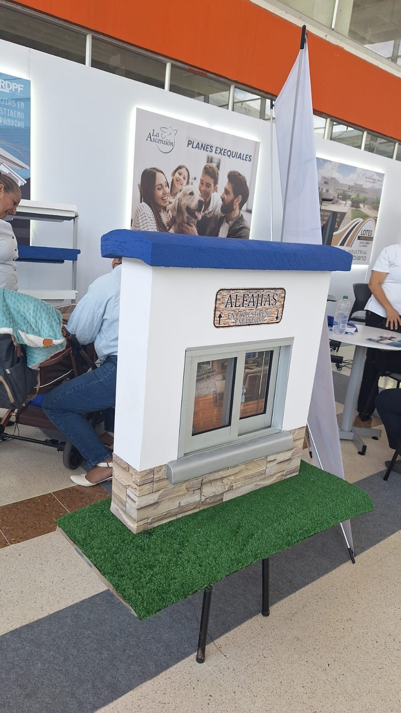

NC2025/0009562
PATENTEPATENTE – ALFAJÍAS EN POLIESTIRENO EXPANDIDO
Alfajía
- Inventor
- María Camila García Burbano – RDPF Soluciones Arquitectónicas
- Sector
- Construcción
- Redes sociales
- Abrir enlace ↗
- Contacto
- 📞 3122071561

NC2025/0009562
PATENTEAlfajía